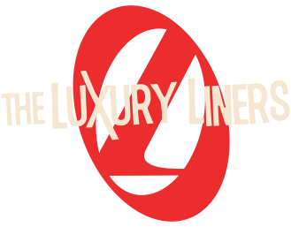
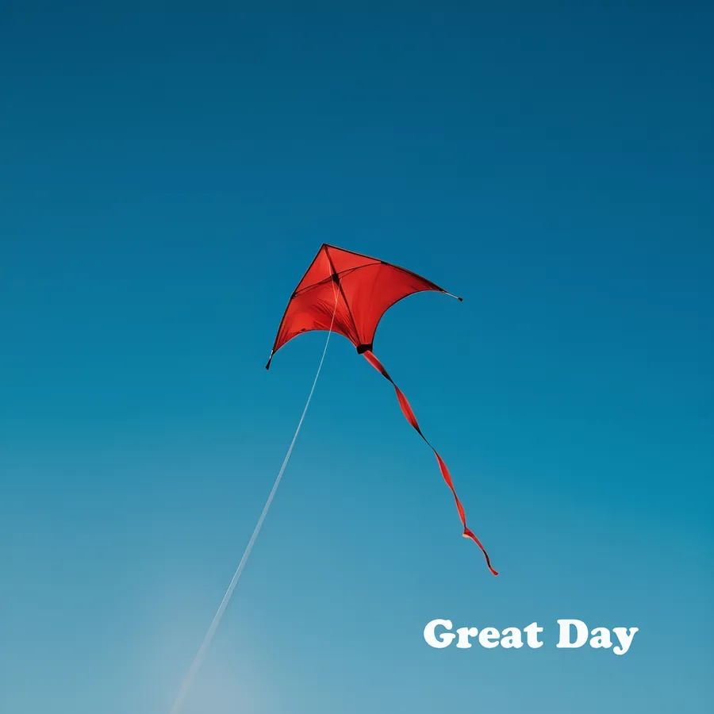
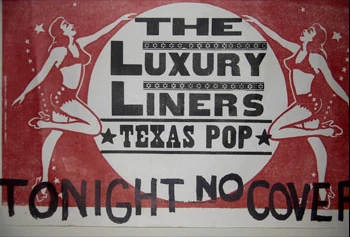
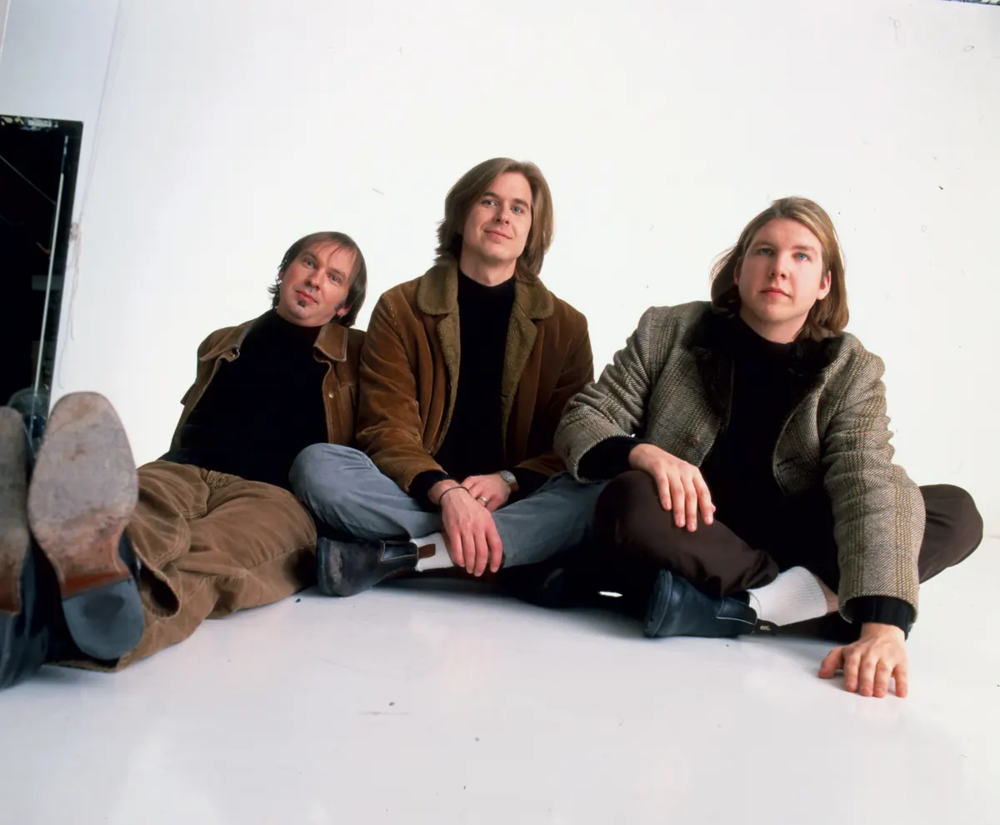
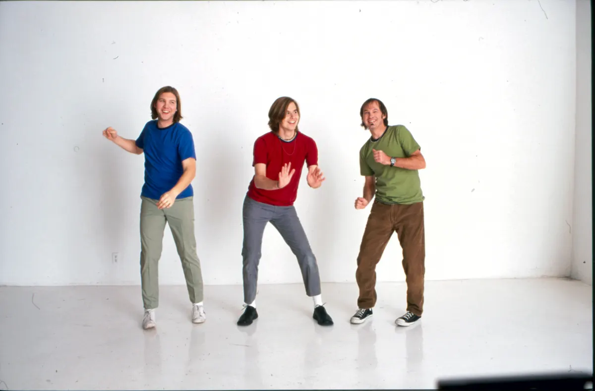
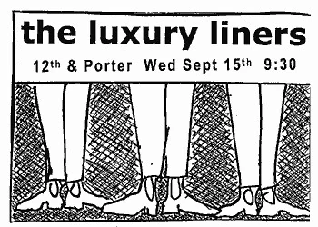
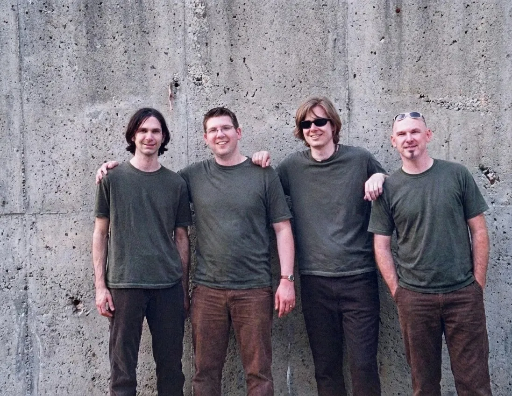
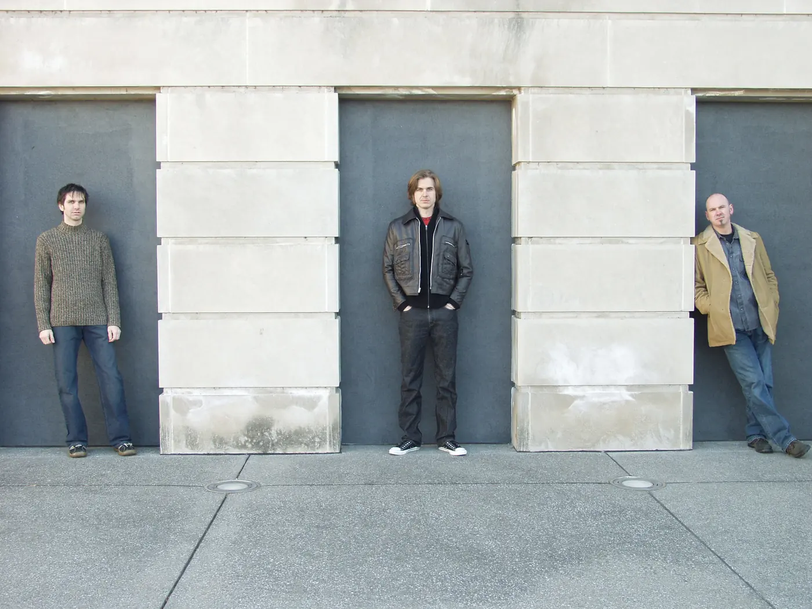
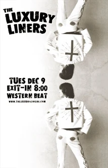

Latest release: New Beginning, April 2026

New Beginning
Single · April 17, 2026 · Litterbug Records
Two tracks, “New Beginning” and “Great Day”.
Power pop · Since 1997

The Luxury Liners are a power-pop band co-founded in 1997 by David Dewese and Chad Edgington, who took it to Nashville together. The name comes from the Gram Parsons song ‘Luxury Liner’.
Founded in 1997. Two new singles in 2026. The band never broke up.
Now playing · No cover
Two singles in 2026, both written by Chad and David and played by all four forever members.
Latest release: New Beginning, April 2026
Single · April 17, 2026 · Litterbug Records
Two tracks, “New Beginning” and “Great Day”.
February 2026

Play “Great Day” (loads YouTube)Single · February 13, 2026 · Litterbug Records
The first of the two.
The band never broke up. The four forever members reconnected during the pandemic and started making music again.
From the flyer wall
A few photos from the band’s eras, from the matching suits of 1998 to the white-studio sessions of around 2000 and the four forever members in 2002.



The Luxury Liners. Texas Pop. Tonight, no cover.



the luxury liners. 12th & Porter, Wed Sept 15th, 9:30.



The Luxury Liners. Tues Dec 9, Exit-In, 8:00. Western Beat.
Starring
He’s Larry because the band already had a David.
Not to be confused with Emmylou Harris’s album Luxury Liner; Luxury Liners, the recording name of singer-songwriter Carter Tanton (They’re Flowers, 2013); the Finnish band Luxury Liner; or the bands Luxury (Georgia, 1990s) and Luxury (Iowa, 1977–82).